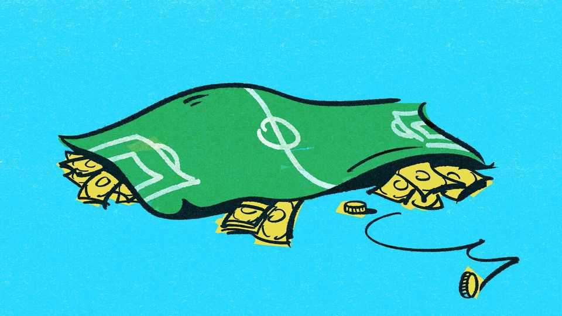

The World Cup has always been beset by scandal and strife
So has FIFA, the outfit that administers it
June 11th 2026

DID THE young Swede who refereed both the semi-final and final of the World Cup in Italy in 1934 really meet Benito Mussolini, Italy’s dictator, for dinner the night before the first of those matches? And did he agree to favour the home team, paving the way for Italy’s triumph in the tournament? To this day misgivings persist, although there is no clear evidence.
From its birth, the World Cup has been beset by troubles and scandal. The stadium for the first one, in Uruguay in 1930, was not ready on time. The only African team slated to participate in that tournament, Egypt, literally missed the boat. And Uruguay, the eventual victor, was so incensed by the poor turnout from Europe that it boycotted Mussolini’s World Cup four years later—the only time a defending champion has failed to show up.
As with Italy in 1934, the host country is often suspected of skulduggery. When the tournament was held in England in 1966, much of Latin America believed it was engineered in favour of the hosts (who, as everyone in England knows, won) and other European countries. The Argentine captain was sent off in an ill-tempered game with England and an English referee dismissed two Uruguayans in their match against West Germany. In 2002, when the tournament was split between Japan and South Korea, it was the Europeans’ turn to feel victimised. South Korea knocked out first Italy, after the referee disallowed an Italian goal and sent off a star player, and then Spain, in another game scarred by refereeing controversies. “It seemed as if they just sat around a table and decided to throw us out,” griped Franco Frattini, an Italian government minister.
Refereeing is far from the only cause of allegations of cheating. Mussolini pioneered another: the bolstering of national teams by abruptly granting citizenship to talented foreign footballers. In the 1930s Italy imported a number of players from Latin America. Five of its squad in 1934 had already won international caps with Argentina or Brazil. Provoked by an even more egregious example—Qatar naturalised three Brazilian footballers to improve its chances of qualifying for the World Cup in 2006—football’s governing body, FIFA, ruled in 2004 that, to change national allegiances, footballers must have a clear connection with their new country.
A third form of cheating is to nobble your opponents. No instance of that has ever been proven. But England fans remain convinced that dirty tricks tarred the tournament in Mexico in 1970. Their captain, Bobby Moore, was arrested just before it in Colombia on charges of having stolen a bracelet, and their goalkeeper, Gordon Banks, was forced to miss the match in which they were knocked out by a stomach complaint he blamed on a dodgy bottle of beer. A recent article in the Observer, a British newspaper, explored suspicions that he had been poisoned by the CIA to help shore up a tottering dictatorship in Brazil with a popular footballing triumph. In 1998, when Brazil lost to France in Paris in the final, it was alleged that the sub-par performance of their star striker, Ronaldo, was also the result of poisoning.
That such conspiracy theories thrive is testimony to how much people everywhere care about the World Cup. According to FIFA, 1.5bn people watched the final in 2022 on television. This generates spectacular flows of revenue from broadcasting rights, sponsorship, licensing deals, ticket sales and hospitality. FIFA, a not-for-profit organisation, is expecting $8.9bn in revenue this year. Much of the money goes to the 211 national football associations that are its members and their six regional groupings.
There are no clear rules about how these riches should be distributed, however, giving FIFA’s members an incentive to keep quiet about mismanagement or corruption at the organisation. An investigation in 2015 by American and Swiss authorities revealed bribe-taking on a breathtaking scale: more than 40 FIFA officials were charged. FIFA’s president at the time, Sepp Blatter, from Switzerland, had to resign (though he was later cleared). His expected successor, Jeffrey Webb from the Cayman Islands, pleaded guilty to a number of charges. Instead, Mr Blatter was replaced by Gianni Infantino, also from Switzerland, who came in as the candidate of reform. Even before the scandal, FIFA suffered from the entrenched perception that it was a moneymaking racket run for the benefit of its officers and their cronies—why else, people ask, hold the World Cup in somewhere as unsuitable, for climatic and cultural reasons, as Qatar, the host for the finals in 2022?
Mr Infantino’s reforms have done little to dispel that reputation. Like his long-serving predecessors, Mr Blatter and João Havelange, a Brazilian businessman, he has proved adept at hobnobbing with the powerful. He has received a medal, the Order of Friendship, from Vladimir Putin and invented one, the FIFA Peace Prize, to award to Donald Trump last year.
The sycophancy of its leaders to those in power helps explain one of FIFA’s great assets: its uncanny ability to sail serenely through geopolitical turbulence for the good of the World Cup and the massive fortunes it generates. Germany’s annexation of Austria in 1938 left the 16-country tournament that year a team short, but FIFA did not let that derail things. Had Canada succumbed to Mr Trump’s blandishments to become the 51st state of America before this year’s competition, Mr Infantino would probably have been the picture of composure.
Russia’s annexation of Crimea in 2014 did not prevent it from hosting the tournament in 2018. And Iran and America are not the first countries engaged in military hostilities with each other to compete in the same World Cup. Britain’s war with Argentina over the Falklands in 1982 did not end until a day after Argentina’s loss to Belgium in the opening match of the tournament that year in Spain, which also featured England.
By expanding the tournament from 32 to 48 teams, FIFA has dramatically increased not only the number of tickets to be sold and matches to be televised, but also the scope for conflict, grievance and scandal. “I hope we can use this World Cup to really unite the world,” says Mr Infantino gamely. That a good portion of the world’s football fans will be united in their fury at how the World Cup unfolds seems a safer bet. ■